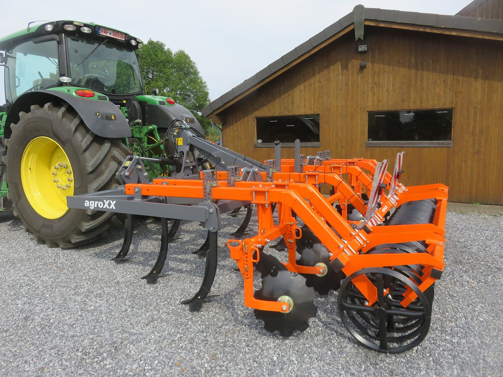

TRIPLE-X 4.0-13 Mulchgrubber Premium
mit Dachringwalze
- Baujahr 2025
- Arbeitsbreite 4,0 m · 13 Zinken
- Arbeitstiefe bis 30 cm
- klappbar, Beleuchtung, Steinsicherung
13.700 €netto zzgl. 19 % MwSt. · Inserat-Nr. 7373771

Landtechnik aus Ennigerloh
Mulchgrubber, Kurzscheibeneggen, Pflüge, Walzen und Tiefenlockerer – ständig 50 bis 80 Maschinen ab Lager. Persönlich beraten von Thomas Schalkamp.
Mulchgrubber, Kurzscheibeneggen, Cambridgewalzen, Großfederzinkeneggen und Tiefenlockerer sofort verfügbar.
Besuchen Sie unsere Ausstellung. Vorführgeräte und einzelne Maschinen auch zu Sonderkonditionen.
Ihre Altmaschine nehmen wir nach Absprache gern in Zahlung.
Lieferung möglich, günstige Transportmöglichkeiten vorhanden.
Alles für Stoppelbearbeitung, Saatbettbereitung und Grundbodenbearbeitung – vom Mulchgrubber bis zum Muldenkipper.


Unser Schwerpunkt
Für ganzflächiges Arbeiten bei intensiver Mischarbeit, zügiges Auslaufen von Ausfallgetreide und ein sauberes Strohmanagement. Für Schlepper von 140 bis 300 PS.
Eine Auswahl aus unserem Bestand. Den kompletten Bestand mit allen Preisen finden Sie unter Maschinen.
mit Dachringwalze

ab Lager sofort verfügbar

Ecologic Onland Dreh-Schälpflug

hydraulisches Hubwerk 4000 kg

620-mm-Ringe · Pendelausgleich · sofort lieferbar

mit Herkuleszinken 70 × 12 mm
Das agroXX techniCCenter von Thomas Schalkamp sitzt in Ennigerloh im Münsterland. Hier stehen die Maschinen, hier können Sie sie in Ruhe ansehen und sich beraten lassen.
Wir sprechen mit unseren Kunden in elf Sprachen – darunter Deutsch, Englisch, Polnisch, Französisch und Rumänisch.
Welche Maschine passt zu Ihrem Schlepper und Ihren Flächen? Thomas Schalkamp berät Sie gern – am Telefon, per WhatsApp oder direkt bei uns auf dem Hof in Ennigerloh.